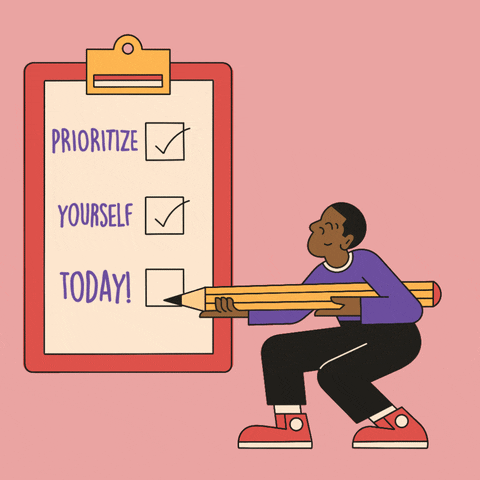

Saying no is an important aspect of setting boundaries and managing feelings of overwhelm. When you say no to something, you're prioritizing your own needs and well-being. This can help you avoid taking on too much and feeling overwhelmed. By setting boundaries around your time and energy, you can make sure you're not neglecting important aspects of your life, such as your relationships, hobbies, or self-care practices. Saying no can help you stay true to your values and goals. By choosing to say no to something that doesn't align with your priorities, you're respecting your own boundaries nd maintaining your sense of integrity.
 well rested yet?